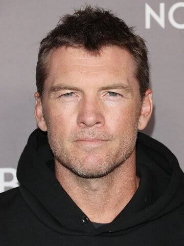
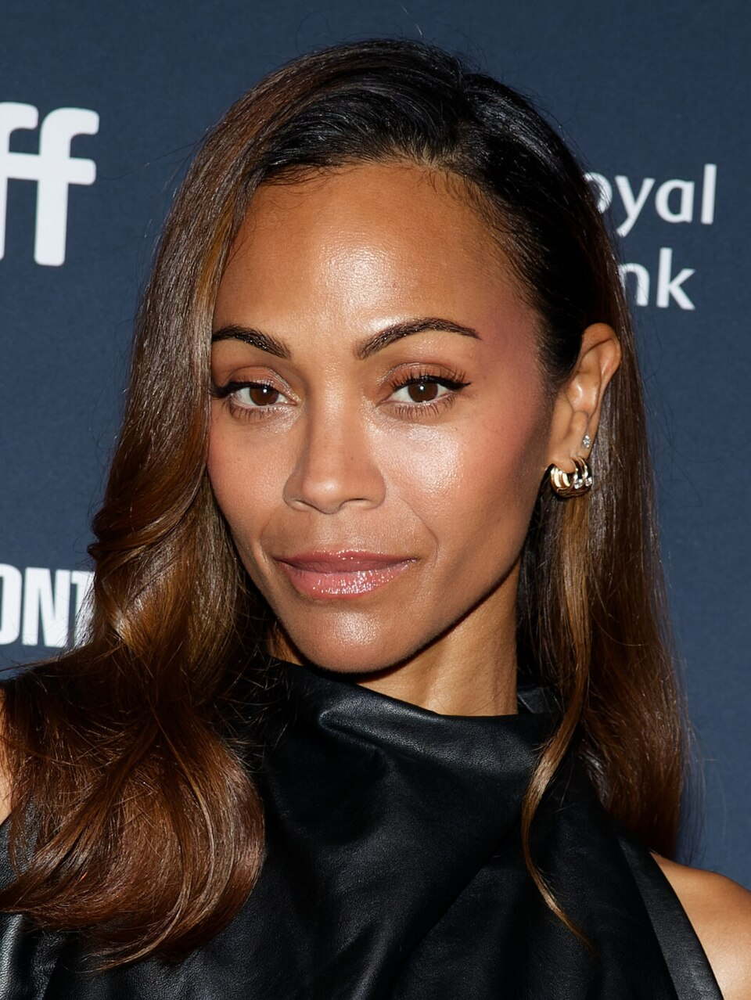
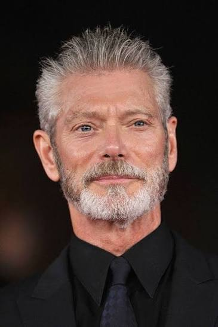
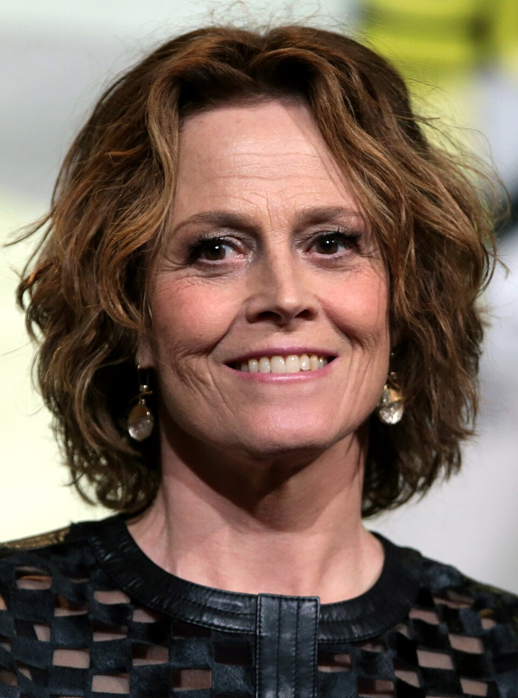
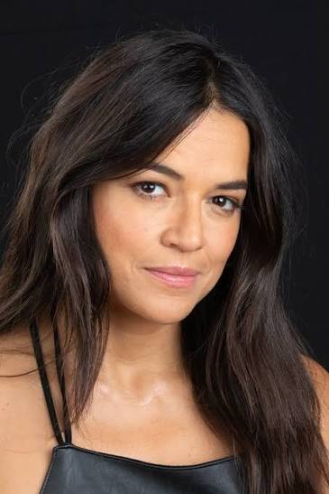

Sam interpreta al protagonista de la película, un marine parapléjico que se une al proyecto Avatar para ocupar el puesto que, como científico, ejercía su hermano gemelo recientemente fallecido.

Una habitante nativa de Pandora que se ve obligada a enseñar a Jake las costumbres de los na’vi. Simkin destacó de la actriz su «combinación de delicadeza y audacia», además de «cierta fiereza y su buen físico» como algo esencial a la hora de escogerla para el papel.

Comandante militar del proyecto y encargado de la seguridad de la base.

Una astrobióloga y directora del proyecto Avatar que sirve como mentora de Jake y que defiende las relaciones pacíficas entre humanos y na’vi.

Una piloto de helicópteros que lleva dos años formando parte del cuerpo de militares asentado en Pandora y que acaba convirtiéndose en una renegada al ayudar a los na’vi en la lucha por conservar sus tierras.